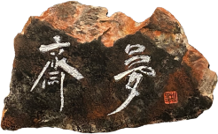
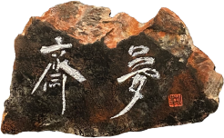

우리 동네 데스티네이션
MY TOWN
DESTINATION
서촌
안동선 (프리랜서 에디터 / 컨텐츠 디렉터)
저는 2년 전 서촌으로 이사 오게 되었습니다. 그 전에는 성북동에 살았죠.
프리랜서 에디터인 저와 소설을 쓰는 남편에게 가장 중요한 거주의 조건은
걷고 싶은 동네입니다.
하루 종일 노트북 앞에 앉아
원고를 써야 하기 때문에
흥미진진하거나 고즈넉한,
다채로운 산책길도 필요하죠. 서촌은 다채로운 시간의 겹이 드리워진 길들로 이뤄져 있습니다.
그 길 끝에는 경복궁의 의젓한 기와 지붕과 우아한 돌담이
자리하고 이 모든 것을
인왕산이 너그러이 감싸 안은 서촌은 대체 불가한 동네였죠.
역사와 미감을 품은 서촌의 다채로운 공간들을 소개할게요.
ART
서촌은 예로부터 아티스트들을 위한
창조의 산실이었습니다.
겸재 정선이
인왕산을 화폭에 되살리고
이상이 시를 짓던
서촌에서는 모퉁이를 돌면
한 세기 전으로
타임워프 하는 기분을 느끼게 되죠.
‘모던 보이’ 이상이 이십 대 초반까지 살았던 통인동의 가옥은 현재
이상의 집(@isangs_house)으로 탈바꿈해
이상의 숨결을 느낄 수 있는
자료를 보관하고 있고, 멀지 않은 곳에는
한국적 산수화를 완성한
이상범 가옥이
있어 그가 작업하던 모습을 확인할 수
있어요. 이상범을 사사한 박노수가 1970년대부터
지내며 작품 활동을 한이층 집은 현재
1.박노수미술관(@paknosoo.artmuseum)으로
관람객을 맞습니다.
복합 문화공간 2.보안여관(@boan1942)은 서촌을 대표하는 예술과 생활의
공간이에요. 이름 그대로 1940년대부터 60여 년 동안 수많은 이들이 머물다 간
여관의 역할에 충실했던 보안여관은
2017년 복합 문화예술공간으로 새롭게
태어났습니다. 이전의 여관 골조를 그대로 살린 전시장, 다채로운 한국 차와 음료를
즐길 수 있는
‘33마켓’, 북악산과 경복궁 등 주변의 고풍스러운 풍경이 창문 가득
펼쳐지는
‘보안스테이’, 심도 깊은 큐레이션을 자랑하는
‘보안책방’ 등이
보안여관을 채우고 있죠.
3.팩토리 2(@factory2.seoul)는
전시 공간 겸 아트 숍으로 서촌의 또 다른 터줏대감입니다.
스페이스 윌링앤딜링(@space_willingndealing)은 갤러리와 미술관, 비엔날레와 아트페어까지 두루 경험한 디렉터가 현장 경험을 기반으로 전시를 기획하고 다채로운 프로그램을 운영하는 곳입니다. 언제 가든 지금 현대미술
신에서
가장 활발하게 활동하는 작가의 작품을
볼 수 있는 곳이죠.
4. 노부 서울 종로구 옥인길 23-6
EAT
저는 서촌에 살기 전부터 종종 4.노부라는 작은 소바집에 오곤 했습니다.
맛도 맛이지만 무뚝뚝한 붓글씨로 ‘수타 소바’라고 적은 간판, 군더더기 없는 파사드,
침착한 자신감이 내비치는 모녀의
접객,
딱 알맞은 크기로 틀어 놓는 경음악을 들으며 소바를 먹는 감각에만 집중하는 총체적 경험이 좋아서요.
매일 자가제면한 면으로 마소바, 낫또 소바 등 몇 가지 안 되는 메뉴를
단출하게 꾸리는 심플하고 내공 깊은 집이라고 소개하고 싶어요.
‘프로방스 프렌치 비스트로노미 와인 바’를 표방하는
5.파틱(@patic_seoul)은
프랑스의 달팽이 요리를 조개로 활용한 ‘조개 에스카르고’를
비롯해 참신한 해산물요리를
와인과 함께 즐길 수 있는
곳이에요.
6. 팔마 서울 종로구 자하문로 5길 39 1층
6.‘모던 타코 바’ 팔마(@palma_seochon)는
멕시코 요리를 와인이나 칵테일과
함께 즐길 수
있는 곳이에요. 손바닥이라는 뜻의 레스토랑
이름 ‘팔마’ 처럼 바 테이블과
면한
오픈 키친에서 두 명의 셰프가
맨손을 써서 직접
반죽하고 빚어내는 토르티야는 물론 숯불에 굽는
해산물과
육류 요리를 만날 수 있죠. 록음악이 웅웅 거리고 종종 불꽃이 이는 활기찬 분위기에서
두 손을 써서 타코를 먹는 기분은
'살아있음’ 그 자체입니다.
서촌에서 커피를 마시고 싶을 땐 커피 취향이 중요합니다.커피에 진심인 이들에겐
노멀사이클코페
(@normalcyclecofe_),
7.카페 시노라(@cafesinola)를 추천해요. 저처럼 쫀쫀한 크림 올라간 아인슈페너를 좋아한다면 아키비스트(@cafearchivist)가 ‘서울 3대 아인슈페너 맛집’으로 유명하죠.
8. 온그라운드 서울 종로구 자하문로 10길 23
카페에서 일하는 걸 좋아하는
이들에겐
조용한 커피한잔(blog.naver.com/hgbj78),
테라스석에서 신선한 공기를 만끽하고
싶다면 스태픽스(@staffpicks_official)나
부트카페(@bootcafe.seoul)가 제격이죠.
여전히 힙 플레이스로서 자리를
굳건히 하고 있는 MK2와 그 옆에
새로 생긴
8.온그라운드는
서촌에서 멋쟁이들이 많이 모이는
카페가 아닌가 싶어요.

 

한편 커피 아닌 차를 마시고 싶다면 보안여관 4층에 문을 연 프라이빗 티 룸
9.몽재(@boan1942.mongjae)에서 도예가들이 만든 특별한 잔에 한국과 대만,
중국 차를 마실 수 있어요. 홍차를 좋아한다면
헤르만의 정원(@hermannsgarden)에서 홍차는 물론
그윽한 밀크티를 마시기 좋고요. 칵테일은 ‘서촌의 자랑’이라고 불릴 만큼
인기가 많은 참바(@bar.cham), 그리고 참바의 세컨드 브랜드,
사과라는 뜻처럼 과일로 만든 술을 많이 다루는 폼바(@pomme_bar)를 추천합니다.
상큼한 과일이 가득 그려진 메뉴판을 펼치는 순간
침이 고이는 맛있는 칵테일을 만날 수 있죠.
VIEW
10. 무무대 서울 종로구 옥인동
인왕산이 감싸 안은 동네이다 보니
서촌에는 근사한 뷰를 만끽할 수 있는 곳들이
있습니다.
우선 옥인동 수성동 계곡에서
20~30분 정도 산길을 오르면
10.무무대(無無臺) 전망대가 나옵니다.
아무것도 없이 아름다움만 존재한다는 뜻처럼
북악산, 망우산, 낙산을 거쳐 청계산, 관악산으로 이어지는
뷰가 장관인 곳이에요.
경복궁과 광화문, 청와대 역시 한눈에 보이고 시계가
좋은 날에는 저 멀리 롯데월드타워까지도
확인할 수 있죠.
일출과 일몰 때도 좋고 새까만 밤 노랗게 빛나는
서울의 야경을 보기에도 그만입니다.
무무대에서 멀지 않은 곳에는 11.더숲 초소책방(@chosochaekbang)과
12.인왕3분초 쉼터가 있습니다. 두 곳 모두 비교적 최근에 문을 연 곳들입니다.
1968년 남파 무장공작원들이 청와대를 습격하기 위해 북에서 내려오는 사건이
있었습니다. 그 사건 이후 인왕산과 북악산에는 약 30여개의
군 초소 및 경계시설이 들어섰지요.
더불어 그 근방은 오랫동안 시민들의 출입이 통제되었는데 시대가 바뀌며
점차 그 수를 줄여오다가 2018년 인왕산 전면 개방에 따라 대부분 철거되었지요.
이때 몇 곳의 초소를 남겨 문화시설로 탈바꿈했는데 더숲 초소책방과
인왕3분초 쉼터가 그중 한 곳입니다. 특히 인왕3분초 쉼터는
건물의 사면을 통유리로 마감해서 인왕산 숲을 파노라마처럼 감상할 수 있어요.